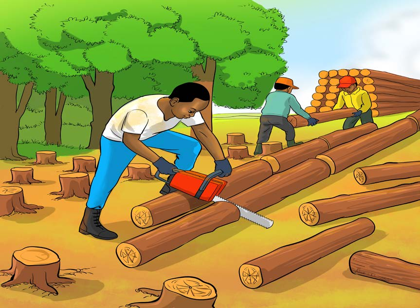

Upasuaji wa mbao
Mbao ni zao linalotokana na miti. Upasuaji wa mbao huhusisha ukataji wa miti kwenye misitu ambapo miti inayofaa kwa mbao hukatwa na kupasuliwa mbao. Baadhi ya miti maarufu kwa upasuaji wa mbao ni pamoja na mininga, mipingo, mitiki, mikongo, mivule, mivinje, na mikaratusi. Misitu ya mbao inaweza kuwa ya asili au iliyopandwa. Baadhi ya mikoa maarufu kwa upasuaji wa mbao zinazotokana na misitu ya asili ni Tabora, Morogoro, na Lindi. Pia, mikoa ya Iringa, Njombe, na Kilimanjaro ni maarufu kwa upasuaji wa mbao zinazotokana na misitu ya kupandwa. Kielelezo namba 12 kinawasilisha uandaaji wa magogo kwa ajili ya kupasua mbao.
